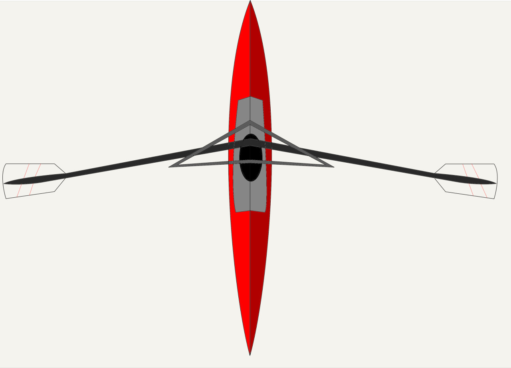

Академічний човен (Скіф)
Спортивне судно з виносними кочетами та рухомим сидінням (банкою). Забезпечує максимальну гідродинамічну ефективність і швидкість.
- Тип весла: парні або розпашні весла, закріплені в кочетах
- Посадка: спиною вперед на рухомій банці (полозках)
- Особливість: залучення м'язів ніг завдяки рухомому сидінню
